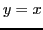
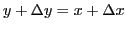
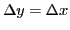
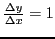
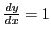

Next:
Differentiation of a sum
Up:
Rules for differentiating standard
Previous:
Differentiation of a constant
Contents
Index
Differentiation of a variable with respect to itself
Let

.
Following the General Rule, §
4.7
, we have
FIRST STEP.

.
SECOND STEP.

THIRD STEP.

.
FOURTH STEP.

.
Therefore,
(equation (II) above). The derivative of a variable with respect to itself is unity.
david joyner 2008-08-11